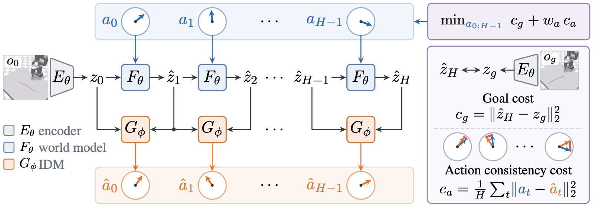

A predicted trajectory can look like it reaches the goal while the real one drifts away. ACID checks every predicted step by asking an inverse dynamics model which action it implies.
Standard planning scores a candidate only by how close its predicted final state is to the goal. Nothing checks whether each predicted step could actually be produced by its action.
Below, DINO-WM plans the same episode twice. In each pair, the left frame is the real environment and the right frame is what the world model imagined, with the real object overlaid in magenta. Step through the plan and watch where they split.
The true outcome of an action is unknown until it is executed, but the action itself is known. ACID moves the check into action space.
The world model Fθ predicts the next latent ẑt+1 from ẑt and the conditioning action at.
An inverse dynamics model Gϕ reads the predicted transition (ẑt, ẑt+1) and infers the action ât that explains it. A flow-matching decoder; one Euler step is enough.
If the step is realizable, ât recovers at. Otherwise the residual ‖at − ât‖² exposes the world model's error. Under locally linear dynamics it bounds that error from both sides (Prop. 1).
CEM minimizes cg + waca, with a scale-invariant weight wa = λ·σg/σa recomputed every iteration. The world model is never retrained.
Fig. 1, animated in the order of Algorithm 1. The highlighted modules are the ones running on the current line; after J CEM iterations the plan is executed and the loop starts again.

Three JEPA-style latent world models, five simulated tasks. Only the planning cost changes; training and the CEM planner stay fixed.
One card per task. Each Original/Ours pair is the same episode and world model, played in sync. Swipe or use the arrows.
Policy-guided planning on a PiPER arm with a single RGB camera. A Diffusion Policy proposes 20 action chunks and the planning cost picks one. Same policy, same world model, same candidates; only the cost differs.
One episode per method, played at 2×. All three rank the same 20 policy samples; only the planning cost differs.
ACID reaches the baseline's full-budget quality with far less search. On Reacher, 30 CEM samples already beat the baseline's 300. With DINO-WM, ACID reaches the baseline's final Chamfer distance in half the planning steps on Granular, and after the first step on Rope. The verifier does add about 12–15% per CEM iteration, but the samples and planning steps ACID saves in reaching the target more than compensate for that overhead.
Mean Chamfer distance over planning steps (lower is better). Orange dashed line: where Original ends after 10 steps.